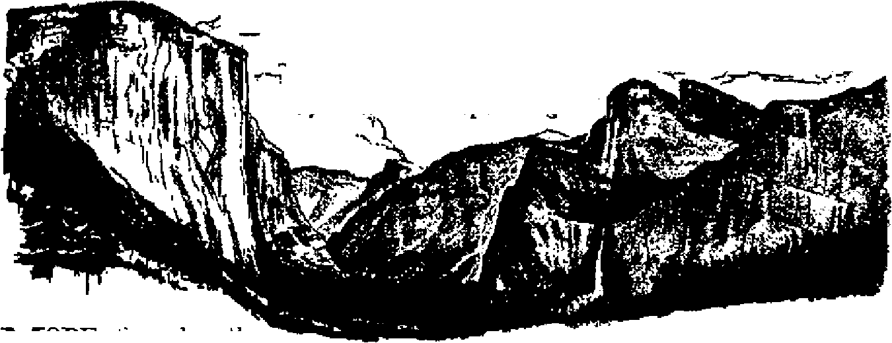

Not a religious issue, but one involving democratic freedoms
Fashion Enslaves the Male
Every age of history has had its peculiarities of male attire
Yosemite, Divine Masterpiece
The sublime grandeur of a world-renowned, magnificent valley
Only God Can Make a Brain
Man cannot fathom its intricacies
THE MISSION OF THIS JOURNAL
New* sources that are able to keep you awake to the vital issues of our times fnurt be unfettered by censorship and selfish interests. 1'Awake 1” haa no fetters. It recognizes facts, faces facts, is free to publish facts. It is not bound by political ambitions or obligations; is unhampered by advertisers whose toes must not be trodcien on; it is unprejudiced by traditional creeds. This journal keeps Itself free that it may speak freely to you. But it does not abuse its freedom. It maintains integrity to truth,
"Awake!” uses the regular news channels, but is not dependent on them. Its own correspondents are on all continents, in scores of nations. From the four corners ©f the earth their uncensored, on'the* scenes reports come to you through these columns. This Joumals viewpoint is net narrow, but is international. It is read in many nations, in many languages, by persons of all apes. Through its pages many fields ©f knowledge pass in review—government, commerce, religion, history, geography, science, social conditions, natural wonders—why, its coverage is as broad as the earth and as high as the heavens.
“Awake 1” pledges itself to righteous principles, to exposing hidden foes and subtle dangers, to championing freedom for all, to comforting mourners and strengthening those disheartened by the failures of a delinquent world, reflecting sure hope fcr the establishment of a right' eous New V/orld.
Get acquainted with “Awake?1 Keep awake-by reading “Awake!**
PtTBLlSL'lED BSMIMOSTEILS Bt WATCHTOWER BIBLE AND TRACT SOCIETY, INC,
117 Adams Street Brooklyn 1, N.Y., U.S.A,
N.Y. President prarideM Buffalo, Secretary
Flvo cents a copy One dollar a year
All communications should be addressed to care of Watchtower Bible and Tract Society »/# «f W. try it
Brooklyn treasurer's wires to be la Judtftl. at 117 Adams St., Brooklyn orkr »dj.
in the article art terc *t*«J k
CkM0« < Mfrni wbw am; h head office be remitted directly with the atontA. Send your old m *tU aa lari adiktM.
See page of this issue
America, U.S., 117 Adams St., Brooklyn, N.Y.
Alrirtlla, T Birt»rwi &>.. StrithCfM 6a
Canada: 310 Jarvis Ave., West: 5, Toronto
Johannesburg, S. Africa, P.O. Box 363 Book Room, Cip« Tcva 6i
Sure dcf.
New copy of (with original wrap) i tect Cut out Detach ticket.
u ritttf •( Brtaklru, N, T., J a cf Manh 3, 1819. Printed la L. 6. A
CONTENTS
Shall America Finance Catholic Schools! 3
Arch Enemies of Public Schools
Wall Cracked at North Col lego Hill
Dangerous Un-Auicriean Activities
Yose mite, M aster p iece o f Di vine Seal pturing 12
Only God Can Hake a Brain 17
Thought, Heasen, Devotion 18
|
The Central Switchboard |
19 |
|
Impulses and Reflexes |
20 |
|
Nature.] Giants of New Zealand |
21 |
Bird Food Everywhere
Have a [>ish of Ice Crea?n 24
“Thy Word Is 7’ru!hv
The Divine Cnction "25
Fighting the Distreas of Hayfever 27
Mechanical Tasters 28
Watching the World 29
WAKE up, Americans! Be you Catholics, Protestants or Jews, it is high time for you to awaken to the impending Hanger that threatens not only your liberty and freedom, but also your very life I This is not a sectarian issue. The issue is not Catholicism versus Protestantism. Bather, the issue is between democratic freedom, liberty and education and totalitarian oppression, censorship and ignorance; democratic institutions vs. church-state control; freedom-loving American citizens vs. ruthless agents of a foreign power. It may startle those who are asleep to learn that this issue is wrapped up in the question: “Shall America finance Catholic schools?”
On February 1U of this year, the Supreme Court, in its blundering school-bus decision, ruled that public tax money could be used to support parochial schools. (See Awake! April 8, 1947.) Since then pressure has been put upon Congress to pass legislation granting federal aid to Catholic schools. The Aiken bill calls for an appropriation of $60,000,000 every year to non-public tax-exempt schools under the control of the pa
pal Hierarchy, while the Taft bill, though not as magnanimous, offers religious schools whatever aid the individual states are already granting them. The effect of the Supreme Court decision and this pending legislation has been explosive. Those who are mentally alert, seeing in these events a battering-ram which is heing used to boat further openings in the wall of separation between church and state, have cried out in alnrm. Tn answer, sponsotR of this legislation charge that those who oppose it are “bigots’7 who show discrimination and deny freedom of worship to American Catholics. Day after day the pros and cons of this issue have appeared in periodicals and daily newspaper articles. In view of this, it behooves every fair-rninded Catholic, Protestant and Jew to consider the issues involved in order to determine the full significance and ultimate outcome of giving federal aid to religious schools. Among those who are called “bigots” is Bishop G. Bromley Ox-nam, president of the Federal Council of Churches, who declared that Hie use of public funds to support parochial education “would seriously weaken the
augvst s. mz
public system which is the bulwark, of democracy”. The Committeejon Christian Relations for the Presbyterian Church in the United States also has similarly protested, saying: ‘'By violating the principle of the separation of church and state it would jeopardize many of our historic and priceless Constitutional liberties.’"' Such legislation, the committee said, would he accepted as “an open invitation to go on tapping tax money for other Roman Catholic activities "whenever its political power permits”. Others joining in. the protest and hence qualifying as Catholic-branded “bigots” included Rabbi Steven S. Wise, the Northern Baptist Convention, th ('National Parent Teachers Association, the Masons, the United Lutheran Synod, the Southern Baptist Convention, and many others.
Other so-called “bigots” are the Honorable Justices of the Supreme Court Rutledge, Frankfurter, Burton, and Jackson, who dissented in the New Jersey transportation ease. Justice Jackson said: “Catholic education is the rock on which the whole structure rests, and to render tax aid to its church school is indistinguishable to me from rendering the same aid to the church itself.” Thomas Jefferson and James Madison, Those stalwart pillars of freedom, because they fought so hard to give Americans their Bill of Rights, also qualify to Vatican agents as “bigots”.
One of the loudest voices in the chorus of pseudo-A nigricans that call defenders of the Constitution “bigots” is that of Cardinal Spellman. Speaking at the commencement exorcises of the Fordham University on June 11, as reported by the New York Times, Spellman said that those who protested against using federal funds for Catholic schools were “un-American and unchristian” and were preaching a crusade of bigotry. What is this? Is it un-American to protest -against the encroachments of a foreign power that seeks to destroy American' institutions of democracy! Or is it unchristian to speak the truth which exposes to public view' the subtle and criminal attack of Vatican fascists, who, like vipers, seek to first poison and then to kill free and liberal institutions! Or in it a crusade of bigotry when great numbers of Americans, becoming alarmed at such brazen attacks upon their institutions, rise np in open protest!
Be it noted that those who aro sponsoring this federal money grab are not the Catholic people, but their greedy shepherds. Hence, the protest ■ is not against the Catholic people as such. In fact, honest Catholics who love American freedoms and democratic institutions above anything else are numbered among those that are opposed to the political activity of the Hierarchy. Protestant groups made this point clear when they said they were stirred by the “political activities of the members of the Roman Catholic Hierarchy who, as representatives of a foreign power, the Vatican State, have been carrying on unceasing propaganda and utilizing continuous and insistent pressure on press and radio and state and federal officials to break down our United States Constitutional guarantee o£ separation of church and .state/’ And another said.' “This is decidedly uh-Ameriean and we are opposed to the idea. To support parochial schools with public funds can mean only one thing, namely, the public maintenance of a system of education whose primary purpose is the teaching of the Catholic religion. This is a violation of the First Amendment of our Constitution, which provided for the separation of church and state."
The Catholic Hierarchy has made no effort to hide its hatred of the American public school system. The “Reverend Brother' B. Thomas, president of Manhattan College, speaking at the com-
mencement exercises of La Salle Military School, said that non-sectarian schools were "unmoral, unchristian and un-American”. He urged the graduates to go on to higher education, but told them that if such was obtained in non-sectarian colleges it was “not worthy of the name”.
Any thatt would hold such hatred of the American public school system as this are privileged, under the provisions of the Constitution, to establish their own schools, but it would be a travesty of justice to insult taxpayers by telling them that their public school system is "un-American” and then force them to pay money for the support of an institution directed by representatives of a foreign power I In the words of Thomas Jefferson: “To compel a man to furnish contributions of money for the propagation of opinions which he disbelieves Is sinful and tyrannical.” Let no Jesuit debatist pick up these words of Jefferson and argue Trnm them that Catholics are under tyranny 'because their taxes are used for the support of public schools. These schools do not indulge in religious teachings, and hence do not propagate opinions which Catholics disbelieve.
Catholic leaders object that it is not they that desire to circumvent the Bill of Rights but rather the opposers to federal aid for the parochial schools. They maintain that refusing such aid is an act of discrimination and therefore a denial of freedom of worship. But can Catholics truthfully say they are denied freedom of Worship in the United States! They are free to carry on their religion in whatever way they desire without the slightest intervention of the state. Surely the granting to them of freedom does not entail supporting the practice of it. Suppose a man were not satisfied with the police protection offered by his city and employed a concern of private detectives to care for his interests. According to Catholic reasontag, refusal of the city to pay part of his incurred expense would constitute a denial of police protection, despite the fact that the municipal police force was always ready to serve him as it was any other person in the city.
Vatican's Long-Range Plans
Some may argue that, for the sake of peace and unity, why quibble over a few million dollars of federal tax money! They will say, give the parochial schools sufficient funds to maintain their upkeep and we will have spiritual unity. But is this sound reasoning! Or is it an illusion that will lead to ultimate disaster 1 A sober consideration of the facte will show that such a course would be suicidal. The Roman Catholic Hierarchy has a long range program the details of which are known to only its inner sanctum and which program is carried on outwardly by Catholic Action.
Look north tq our neighboring country Canada if you want to see to what extent the Roman Catholic Hierarchy will dip into public funds once they are given the right to do so by legislation. Bear in mind that Canada is not a wealthy country like the United States. Yet, on May 9 of this year press reports in Quebec reported how the legislature of that province had granted the Seminary at Joliette $100,000. On the 16th, another $50,000 was voted to the Roman Catholic University of Ottawa, though it is in the neighboring province of Ontario. Then, on the 24th of April it was reported that the Quebec province will make a gift of $100,000 to the Sherbrooke Seminary. It is, therefore, certain that as Catholic power in a given country grows stronger it demands greater funds for its support, until ultimately it reaches its goal as it has done in Spain and Portugal, where the state bears up and supports the church, which rides high and mighty over the people.
That this is the ultimate goal of the Roman Catholic Hierarchy in this mat-
ter of procuring federal funds for its schools, 'we note what a Catholic priest once wrote in his book entitled The Parochial School (1905), page 83:
I have had many conversations with members of the American Catholic 'Hierarchy during the past eighteen years about the public and parochial schools in America. The leading official champions of the latter have stated that the insistent demand of the Catholic hierarchy for a division of the public school money would eventually be granted; that the American people would grow -weary of the school contention and to escape it would adopt the Catholic view; that then every' effort would he made to secure the largest possible grants of public money; that the other sects would, out of envy, demand similar grants for their various schools, and that they would be encouraged by the Catholic dignitaries to press their claim; that the consequence would be. the disruption of the public school system by the competition and anta gon tain of such sectarian bodies; and that the ultimate rcstih would be the impress of the Catholic'Church in secular teaching by virtue of her strong organization and great resources through her various teaching orders.
This discloses the twofold tactics of the Hierarchy. First, to wreck and weaken the public school system as much as possible, and then to take over complete control.
Wall Cracked at North College Hill
The charge that the Roman Catholic Hierarchy is bent. on destroying these democratic institutions is not ill-founded. Here in America today there is an abundance of evidence to prove it Take, for example, North College Hili, a suburb of Cincinnati, Ohio. One would classify it as a typical American small town, with its attractive homes and 5,000 inhabitants. But today internally it is filled with strife and hatred because of a crisis in its educational system.
The trouble all started back in 1940, when, by adroit politics, the Catholic minority of the community gained a majority number of scats on the school board. Thereupon, St, Margaret-Mary parochial school was incorporated in the educational system, and Archbishop McNicholas slapped a rental fee of $6,000 dollars a year on the small community in addition to regular teachers' pay for the eight nuns, which money was turned over to the church, since nuns are sworn to poverty. Yet the basement of the parochial school continued to be used by the parish for its highly-profitable gambling racket of bingo. Having an insatiable greed for money, the avaricious Hierarchy then boosted the rental and salary demands upon the residents of North College Hill. This overloading of the wagon resulted in the Catholics’ losing the election in 1942, and the newly elected school hoard’s throwing off the excessive weight from the taxpayers’ backs by terminating the arrangement with the parochial school.
Renewing the hattie in 1945, Catholic Action, by the use of subterfuge, again won the majority membership on the school board by a margin of 35 votes, and again the parochial school burden was hung upon the recks of the taxpayers. It soon became evident that the Hierarchy was determined this time to place the entire system under its domination. Their plan of attack was this: Under the law, the appointment of teachers was in the hands of the superintendent of schools. If the school board could have this authority turned over to itself, then they could flood the schools with Catholic teachers and thus put the entire system in the hands of the Hierarchy. However, Dr. William A. Cook, superintendent, being a man of principle and a lover of democratic, liberty and freedom, refused 1o hand over to the Papacy the American school system, and so he refused to turn over his confidential files of teacher applications and correspondence. This resulted in his being charged with “insubordination”, and
at the February, 1947, meeting of the board it was voted that his contract should not be renewed when it expired in July. Thereupon, 1,200 taxpayers and many others signed a petition asking for a renewal of the contract, hut all in vain. The superintendent was ousted and out of the 33 teachers, 29 resigned. This forced the parents of hundreds of pupils to organize schools in Protestant churches. Some parents transferred their children to neighboring districts. The National Education Association, after investigating the situation, called it "probably the most serious school situation now current in the nation". The Ohio Education Association offered "to find employment elsewhere for all teachers of this city who wish to leave in protest against present conditions”.
On June 17 at a meeting of the school board attended by more than 1,000 citizens the Catholic majority on the board failed in their effort to replace Dr. Cook with a superintendent of their own choice. Thereupon the whole school board resigned, automatically throwing the school system on the shoulders of the Probeat Court. So now North College Hill is without school teachers, without a superintendent and without a school board.
Is the Roman Catholic Hierarchy perturbed over this overthrow of American democratic institutions? Not in the least I This is exactly what they were aiming at: a destruction of the public school system, in order that it might be replaced by one which will grovel under the scepter of Rome. At least, in North College Hill the wall of democracy was cracked; a bridgehead had been established, and so the Catholic Hierarchy proceeded immediately to consolidate its forces by bringing in Catholic families to replace the Protestant majority that had been whittled down. This "colonizing” has increased the Catholic school population by ten percent.
Spellman Gall
Freedom-loving Americans, here ib a shining example of what is in store for every American community, large or small, that resists the solicitations of the Vatican octopus. Here is the reason that Cardinal Spellman, in behalf of the Roman Catholic Hierarchy in America, asks that 400,000 displaced persona of Europe be admitted to the United States, seventy percent of which are Catholics. The importation of such will greatly aid the Hierarchy to “colonize” more American towns, like North College Hill.
After studying over this coup d’état at North College Hill, Harold E. Fay, of the Christian Century, said: "I am convinced that the Most Reverend John T. McNicholas, Roman Catholic archbishop of Cincinnati, is using this town as a guinea-pig community to determine how deeply he can dip into public funds and how far he cun go by using these and other funds to capture control of a community in which members of his church are still in a minority.” It is an ugly state of affairs when the agents of a foreign power dressed in black clerical garb and giving sweet-sounding but hypocritical lip service and praise to democracy are caught red-handed in the very act of overturning the American public school system. Adding insult to injury, they then charge loyal Americans who rise up in defense of Constitutional principles aa "spear-heading an attack” against "the patriotism of American Catholics”. So railed Francia Spellman, the "honorable” prince of the international combine that promotes churchstate control,_ when he babbled at the graduation exercises at the Jesuit college of Fordham against the Christian Century. In denying these malicious Spellman charges, the Christian Century said that there was no attack upon the Catholic Church but, rather, 'a spirited defense against the uncertain aggressive policies by which Roman Catholics are trying to get for their church
■pecial advantages from the government.” The Christian Century then reduced the thesis of Spellman’s speech to this: "To refuse to give the church anything it wants is to wage a crusade against it and stir up bitterness between Catholics and non-Catholics.” Hence, the magazine said that “the cardinal looks for trouble”, and “if Cardinal Spellman really wants an anti-Catholic fight, he can have one”.
High Time to Awake!
It is along these battle lines that the fight for continued democratic institutions and principles is being fought. On the one hand is a great host of disorganized, freedom-loving people who love education and enlightenment but who are poorly equipped and trained to fight against their adversaries. On the other hand there is a minority, which is -well organized and equipped with “secret weapons” that they use ir. a most cruel and heartless manner to break down and destroy without pity the wall of protection that has guarded America, for so many years, against the inroads of Papal rule administered by church-and-state union.
Honest Catholics, do you want to live in a country of ignorance and superstition like Spain or Portugal! Sincere Protestants, do you want to live under conditions similar to those that existed during the Dark Ages of Papal rule! Devout Jews, do you want to live in a land like that ruled by Catholic Hitler, who was in a secret concordat with the Vatican! From one and all the answer is, No! Therefore, let all honest people awaken from their lethargy and let them realize that unless the wall that divides democracy from church-state control is strengthened, the Vatican Hierarchy will shortly replace the American pablic school system with one similar to that which exists in South American countries, in Spain and in Portugal, where the rate of illiteracy and immorality is appalling. Nor should one lose sight of the possibility that the Roman Catholic Hierarchy may again establish the “golden age” that existed in the fifteenth century, when none could read or write except the priests and the favored few of the nobility, while the hulk of the people were kept in gross ignorance and exploited for the gain of the church. The Vatican longs for the return of such an era; in fact, it extols its advantages. So, America, awake and take alarm! Know that every dollar spent-tn strengthen parochial schools will to that extent weaken democracy’s defense against the age-old authoritarian rule of Rome.
Dangerous Un-American Activities
fJMjU In a straightforward and forceful letter to Congressman J. Parnell Thomas., chairman of the House Committee on Ca- Am erican Activities, former C. S, District Court Judge Albert Levitt, of Santa Monica, California said:
“I respectfully request that your Committee investigate the un-American activities of the Roman Catholic Church in the United States. I am willing to appear before your Committee and present, under oath, so as to be subject to the pains and penalties of perjury, conclusive documentary proof that the Roman Catholic Church in the United States is engaged in subversive activities which are undermining our American fora of government and are designed to destroy the political and religious freedom of our people/'
Mr* Levitt holds degrees from Harvard, Yale and Columbia* In view of his educational background and public achievements, these words come with tenfold force, yet they only state what large numbers of Americans have recognized to be a, fact for a long time* Will the Committee call for Mr. Levitt’s testimony! And if not, why not!
Fashion Enslaves
the Male
66/^LOTHES make the \_j man” is an adage often quoted in this fashionable twentieth century. If the subject of fashion comes up for discussion invariably it turns to feminine apparel, and quite often ends in a heated debate on the virtues or shortcomings of the things ladies wear, or fail to wear, as the case may be. But when it comes to being bound by the tradition, customs and fashions of former generations the male is by all standards of measurement the one to be pitied. His lot is a most miserable one, for his plight is one of slavery', slavery to fashion, a form of slavery that has a very ancient origin.
Every age and period of governmental history has had its distinguishing masculine dress, which has in many cases been more elaborate and strange than the female costumes. Among the savage races that paint, cut and tattoo the skin, and adorn it with bits of wood, bone, stone, beads and teeth of animals, even pierc ing the lips, nose and ears—all the work of fashion makers—it is usually the male that is the worst victim. In the beginning the skins of animals were man's principal clothing; then came the discovery of weaving and an enlargement of his wardrobe. But the greatest influence upon the various fashions has been reli-
gion, politics, commerce and social belief. Savage dress differs from onr own; Oriental costume differs from Western styles; so also do their religious, political and social beliefs. Without detailing the host of variations in all of these different styles, it must be admitted that the males have been most scrupulous to stay within certain limited bounds set up by the customs and fashions of the time.
Look closer at the pageant of fashion on parade down through the ages. Egypt, the first world power, originated the loin cloth, which was later enlarged to a skirt. In the sixth century B.C. under Cyrus of the Medo-Persian empire the long-robed or sleeved tunic was made popular because it covered the defects of their bodies and, therefore, was thought to add majesty to their figures. Instead of these clothes* ‘making the man’ they hid the man’, or lack of man. The Grecian costume was noted for its chiton, a tunic, and hi-mation, which measured about thirteen feet long and six feet wide and was draped over the shoulders in shawl fashion. This dress was described as “refined simplicity", and, though it was a most practical and comfortable one, yet the well-dressed Greek was careful to see to it that his chiton and himation were cut according to fashion's fixed pattern.
The Roman -wardrobe article known as the toga was worn over the tunic or stola. It was a simple form, yet its color was of great importance, denoting a man's rank or profession. Blue was for the philosopher, green for the doctor, ■white for the soothsayer, black for the theologian. Peasants wore solid colors and the aristocrats wore multicolored togas. So it was quite important that the male wear a toga specifically colored for him according to custom.
During that long, dismal period of history known as the Dark Ages the male sank to the lowest depth of captivity in the mire of fashion. Men became serfs, obedient to every whim and nightmare of fashion that the despots of those times imagined. The Crusades also cast their curse upon man’s freedom. It was an age of adventure and lust, sometimes called “romance”, when knight gallants were literally encased in coats of mail and armor plating, like canned meat. The well-dressed man kept his suit well polished and the joints well oiled.
In the latter part of the sixteenth century French nobility reached its zenith in luxury and stupidity of dress. A good description of that male slavery is given in the book Historic Costume:
The men and women vied with each other in the elegance of their dress to such an extent that the gentlemen became as effeminate as possible in their attire, and their whims and absurdities were unbounded. They imitated the ladies in wearing not only necklaces, rings, and earrings, but also ruffs and rolls or artificial hair. They adopted the corset to give them slim waists, and the busked doublet (the doublet with boned front coming down to a point), which gradually evolved into the padded front, forming a pouch-like protuberance which imparted a grotesque appearance to the wearer. This fashion, however, did not last, possibly because it was clumsy, or still more likely, because it created a great deal or nuisance. . . . Fans were carried by these “curled darlings” of society, and as a vanity of vanities they wore at night masks and gloves saturated with oils and pomades. . . . Worse than all this, however, was the king's
Henry III] love for paint, powder, and perfume. Perfumes were the rage. Everything was bathed in amber, musk, ambergris, and other scents. With all this foppishness in gentlemen’s attire, certainly feminine extrav-■agances may be condoned.
D’Aubigne, the noted French historian, horrified at Henry’s eccentricities, wrote: “Each comer -was at a loss to know whether he beheld a king-woman, or a man-queen.”
Like Frenchmen, Englishmen were also infected with the powdered-wig, ribbon and perfume disease. Exclaimed one person at the time: “It was a fine silken thing I espied th’ other day walking ‘down through Westminster Hall, that had so much ribbon about him as would have plundered six shops and set up twenty country peddlers,”
Wigs, first made by the Egyptians 5,000 years before, reached their greatest extravagance during this period, extending even down to the waist and, of course, were worn by the stylish males. Some denounced these wigs as “bushes of vanity”. Anathemas against them, however, were futile to deliver the mules from their enslavement until fashion declared that they were no more stylish.
Prior to collars as we know them today men wore great gatherings of starched ruffles around their necks. Henry II of France wore a ruff a half yard in depth. It was heavily starched with what Phillip Stubbes called “divell’s liquid”. Quoth he: “The one arch or pillar whereby his [the devil’s] kingdom is underpropped, is a eertaine kind of liquid matter, which they call starch, wherein the divell hath willed them to washe and dive their ruffs well, whiche, being drie, will stande stiff and inflexible about their necks.” The modem-type collar is said to have been invented in England, in 1789, for the purpose of hiding boils and pimples. Neckties or cravats are a comparatively modem invention compared with earrings, necklaces and fans. Originally made of a soft material, they served a useful purpose, and were wrapped about the neck like a scarf for protection. But today these tie-me-ons are only ornamental accessories.
Another example of abject slavery to fashion in the past was the non-elastic “tights” which one outspoken fellow described as follows “Tt would he unjust to the tailor to say they fitted like my skin, for they sat a great deal closer. When I took them off my legs were like fluted pillars grooved with the cords of the pantaloons.” More than all these things, it puts a great strain on our imagination to think that the male was so enslaved to fashion in those days that if one were a prominent churchman, judge or doctor it was necessary for him to have his muff regardless of the weather, in order to lend an air of dignity befitting his position in society.
Finally, with the coming of the French .Revolution, white powdered wigs and knee breeches came to an end, and long-tail coats and long trousers with beaver hats became the style on the Continent Yet in spite of such revolutions the poor male was still shackled to the apron strings of Dame Fashion and was compelled to humbly accept her new dictates as to what was stylish!
While some of the early settlers that came to America were interested in gaining freedom from religious persecution, none seemed particularly interested in extricating themselves from this ancient form of slavery. The Pilgrims, Puritans, Dutch, French and others each brought with them their habits and traditions of (Jress. They had their collars and cravats, garters and buckles, pantaloons and peculiar hats, beneath which some wore wigs.
AUGUST 8, 1W
Today men no longer wear toothpick shoes, ruffe, muffs, lace, ribbons and embroidery. But is this because they have rebelled against and escaped from fashion’s snare? Not at all. The whims of fashion have changed, but the devotion of the male to fashion’s new dictates is as ardent as ever. He must dress according to fixed rules of society if he is to be “respectable”. It might be a sweltering-hot day, yet this twentieth-century male meekly puts on his collar, tie, coat and hut and literally boils inside, with or without feeble words of protest
The basic factors that control fashion and style have not changed, no, not in the last five thousand years. Religion, politics and commerce are still the masters of fashion. Religion binds great turbans on millions of men’s heads. It clothes its clergy in unsightly petticoatgarb as old in design and as un scriptural as their moldy crpedal dogmas. Politics still holds sway and rules through its city, state and government institutions. Their officers and servants are identified by their dress: soldiers, sailors, policemen, firemen and even the street sweepers, all have their uniforms cut out for them. Not the least influential of this unholy “trinity” that controls fashion is commerce. Commerce feeds on the profits made from the sale of “fashionable” suits, hats, collars, ties, etc., etc. Commerce subsidizes the fashion-makers and designers and advertising sells the new styles to the male victims.
Without doubt, men are as much in slavery to fashion as the women. Manifestly, those who will reform fashion must reform this old world of religion, politics and commerce. But, since such is beyond reform, men who long for freedom from fashion's bondage must wait until the righteous New World, free from all enslavement. Then no more will he heard the foolish adage, “Clothes make the mam”
11
VflMmlta
Masterpiece of Divine Sculpturing
MORE than breath
taking is the scene that has _ loomed up ahead. The enormity and grandeur of God’s work of sculpture before you crushes out words. Suddenly ftieling about as big as a small ant, robbed of breath and speech, your mind staggered by what your disbelieving eyes see, you just stand and stare. For the oast hour you had been driving over rolling foothills dotted with live oaks, which had gradually given way to scented pines as you climbed higher and higher into the Sierra Nevada mountains of California. Then, us the road leveled off somewhat as it wound along the bank of the tumbling Merced river, came that break in the forest. The curtain of green drew back to reveal out ahead there in the open your journey’s end, Yosemite valley. In awed silence you stopped the car and got out. And now you just stand and stare, with the Merced river curving by at your feet and with granite cliffs filling the sky above your head.
Recovering slightly from the first shock of astonishment, you move slowly into the forested meadowland valley that stretches ahead for seven miles, varying in width from a half mile to a mile. But it is not this beautiful valley through which the sparkling Merced glides that captures your gaze: it is the precipitous granite walls that engulf the valley as they tower skyward three thousand or
Why, compute with
four thousand feet, the city dweller might
surprise that it would take three Empire State buildings (man’s tallest skyscraper, 102 stories) one on top of the other to be able to peep over the valley rim to glimpse the glorious mountain panoramas fanning out round about: Monopolizing attention, the huge bulk of El Capitan juts out into the valley foreground and, with feet planted on the valley floor, raises its great granite face upward till its brow is cooied by the breezes 3,604 feet above. Sublime in its imposing grandeur, unperturbed by the storms and blizzards that rage and shriek, it seems above earthly things in its air of grand majesty and permanence.
But in such a valley of wonders El Capitan cannot forever hold attention undivided. Opposite El Capitan and on the south side of the valley Cathedral Rocks spire their way 2,592 feet higher than the 4,000-foot-high valley floor, and out of the cradle of the cliff graceful Bridalveil fall curves over the edge for a 620-foot drop through the air. As it falls it swings and sways and sings in the wind, and spray flying free of the fall fashions its own rainbows of misty beauty and clothes the column of water in a gauzy veil. Thereby it seems to half fall and half float, seems gentle and flue and feminine; but the rumbling bass''in
its music "betrays a power beneath its soft clothing. Though many visitors are unaware of it, this is the second -fall they have passed in entering the valley. The first is Ribbon fall, on the opposite side in n recess in the cliff wall. Its 1,612-foot plunge is ten tunes as high as that of Niagara.
But no retracing of steps now; on into the valley new wonders draw zu. Beyond Cathedral Rocks and reaching over 3,000 feet above our heads is Sentinel Roek; and if it is the season for melting snows water cascades over its face in reckless flight. Next busy eyps awing once more toward the norui wall of cliffs to widen as they focus on Three Brothers, an immense mountain mass with three gables fronting the valley, one above the other, with the topmost stretching upward 4,200 feet
By this time you have penetrated the valley to a point where the mighty roar pounding into your ears can no longer be ignored, and you tum to look a little beyond Three Brothers and at the source of the sound. With head thrown back you gaze in silent admiration at famous Yosemite Falls as it seems to shoot right out of the sky. Its first bound over the lip of the precipice frees it of earthly bonds for several seconds as it plummets 1,430 feet in one sheer fall, the highest free-leaping waterfall in the world. But it finds no rest as it erashes into the rock-bopnd pool at the bottom and boiling clouds of spray billow up on the wings of the agitated wind currents. Like a bucking horse the foaming waters pitch and plunge as they tumble thunderously through a small gorge to reach the brink of the lower falL where they unhesitatingly fling themselves over for a full of another 320 feet to the valley floor and the Merced river. So appalling is Yosemite Falls in its total drop of 2,524 feet that in May the earth trembles for half a mile around and its booming voice can be hoard five or six miles away under favorable rircumstanceB.
But even this wonder-fall cannot corner all attention^ for now we are well into the valley and before and around us crowd into view cliffs awesome.and grand. On the north are the Royal Arches, over whose sculptured face a sheet of water picturesquely falls when the snows are melting; and adjoining the Arches is the towering stone called Washington Column, which in comparison shrivels the man-made 555-foot-high Washington Monument in the nation's capital to the size of a telephone pole. Capping the Arches and the Column is the huge hemisphere of granite known as North Dome. To the south Glacier Point rears its austere face 3,254 feet above the valley, and it is over this precipice that the famous firofall tumbles in summertime. Each evening a large bonfire blazes atop Glacier Point, and when it lias burned down to a bed of coals it is poured over the cliff wall. How its fiery glow lights up cliff and sky as it trails its red stream down into the valley thousands of feet below!
Now looking to neither right nor left, but straight ahead, looms up the most rem a r kable rock formation of Yosemite—If alf Dome. It is like the other many granite domes so characteristic of the glaciated terrain, only larger, and half of it has been cleanly sliced off and. carried away by glacier ac-tion, leaving the remaining half standing with its sheer,
front face looking over the valley. In serene majesty it rises from flowery groves and meadows to pierce the blue for 4,892 feet. Its height above sea level ig 8,852 feet. Sole competitor of spectacular Half Dome is stupendous, unbelievable El Capitan. The latter commands the entry of the valley; the former dominates the head.
As one marvels at the sublime grandeur of this magnificent valley the appreciative mind cannot help but meditate concerning its Creator. Jehovah God. He it was that brought into play the erosive and shearing power of water and ice, and it was these natural visible forces that gouged this mighty gorge in the earth, first the preglacial Merced river cut its channel ever deeper until it had fashioned a V-shaped canyon some 2,000 feet deep, then followed the glaciers that inexorably pushed their way through, widening and deepening the canyon to its present U-shape. Then as the gouging stream of ice receded and melted it left behind a large lake sunk down below its 3,000-foot-high shoreline. But the Merced still flowed through, and in passing it deposited sand, eventually filling in the lake and forming the present level valley floor of Yosemite.
Yosemite. When that word is uttered the mind visualizes the world-renowned valley; but the term may embrace much more. The valley itself was discovered and made known to the world by a battalion of whites in pursuit of hostile Indians, in 1851. In 1864 the valley and the Mariposa grove of Sequoia big trees were set aside by Congress to be administered as a public trust by the state of California. It was in 1890 that the far-flung bounds of Yosemite National Park were established, to embrace 1,182 square miles of spectacular mountain country in the heart of the rugged Sierra Nevada range. In 1906 California ceded the area to the federal government, in which status it has since remained. Hence it is that Yosemite may mean much more than the small valley area. No review of Yosemite National Park can rightly limit itself to the eliff-walled valley in whose forested and grassy bosom is cradled the Merced river.
The Merced river. What wild and adventuresome tales its waters could tell if they could tall:! Prom the 13,000-foot-high peaks of the backbone of the Sierras the waters come, rivulets becoming creeks and rivers, winding and slipping their way through high alpine meadows dotted with delicately colored wild flowers, foaming and beating their way through boulder-strewn canyons, eddying and swirling into quieter pools only to soon thereafter be tossing and tumbling through rocky rapids or plunging over dizzying waterfalls. Frolicsome, cavorting, restless water that finds little time to linger and loiter as it hurries from its highland sources to meander with the Merced through restful Yosemite valley. But the Merced's waters can’t tiilk; bo we must see for ourselves.
At the head of Yosemite valley near Half Dome the gorge divides into three canyons. To the south runs lIllouette canyon. Probing into it we soon come to beautiful 370-foot-high Illouette fall, while beyond lies a broad open basin studded with forests and lakes and moraines and which finally ends in the Merced Group of rugged mountain peaks whese snow and ice feed IIllouette's stream.
Tenaya canyon splits off to the north, threading its way between the towering North Dome and Half Dome, Soon Mirror lake appears, fringed by green willows against a backdrop of darker pine forests. If your visit is at sunrise before the breezes of the day are stirring, the glassy surface mirrors to your gaze not only the belt of willows and pines, but also tile huge granite bulk of Mount Watkins and the rocky slopes that elimb toward Clouds Rest peak, topped by the blue vault of heaven itself. As*the reflection has foretold, beyond Mirror lake
The canyon slips between Mount Watkins and the wave of granite that rises toward Clouds Rest. Cascades tumble over glacier-polished 'waterways of rock, and farther on a series of lily gardens and meadows grace fillcd-in Jake basins. Everywhere the smooth-wiped appearance of rock formations testify to the glacial action. Ten miles up this north fork the canyon comes to an end in Tens ya lake and the massive 2,500-font-high building-shaped rock perched above it, called Sierra Cathedral.
The middle canyon of the three-way split is the main one and is the channel for the Merced river. Now far up is Vernal fall, very symmetrical and exact as with easy grace its waters hend over the brow of the precipice andstrHtghtvit out for a 317-foot dive in perfect form. Alittle beyond it and a lot above it the more wildly exuberant Ne-v a d a fall throws its whitened water over the cliff’s edge for a 594-foot drop, but about halfway down it smacks loudly into the sloping cliIf face and ends up in a wild slide. Penetrating the canyon on past Liberty Cap’s blunt bulk and Half Dome’s rounded back side, the sturdy hiker saunters into Little Yosemite valley, an imitation of the yawning Yosemite gorge downstream, It is three miles long and flanked by walls 1,500 to 2,000 feet high, over which milky cascades come bounding-down into the valley bottom. And again farther on, as if nnahle tn forget and in lingering memory of the great Yosemite below, still three other little Yosemites are found in tracing the Merced to its birthplace, the last one being 7,800 feet above sea level and nestled near the base of 13,095-foot-high Mount Lyell. Reminiscent of millenniums long past, on this peak's chilly heights the remnants of a glacier remain.
Two other large basin areas are drained by streams entering the Merced river: one in back of Bridalveil fall and the other stretching out and up from the brink of Yosemite falls. Yosemite creek basin is particularly picturesque. Tt ia dotted with granite domes and hogbacks, some showing just their heads above the surrounding forests, others poking their imposing bulks high above, some singly, others in clusters. On thorn shines the polish of the glacier that brought them into relief. In the upper por-tion of the basin moraine beds are covered with fine forests. Lakes, meadows, bogs, countless alpine flower gardens, all are sprinkled over the basin as it reaches back- to the glistening snow-clad heights of Mount Hoffman. From these frozen environs rills hustle to join the Merced river far below. Sliding over smooth rocks like sheets of glass, oozing through the bogs, jumping small falls and dancing down slanting cascades amidst merry babbling, joining other rivulets to make streams that gracefully curve their way through flowery meadows, the waters follow a carefree course of changing moods as adventurous dashes of reckless flight are interspersed with rest in calm pools or glacier lakes. But on the waters flow unsuspectingly toward their greatest ar-venture, Yosemite falls. Twto miles away the stream in springtime in forty foot wide and four feet deep. The last mile
before its high dive lies between granite domes and folds that billow up like thunderheads, and through this last mile the stream swings its way, to finally pause and compose itself in a restful pool. Then, with an air of finality, it calmly slips over the lip of the pool, takes a little run down an incline, and leaps out over the precipice to become the world’s highest free-flying waterfall. And with a crashing roar far below it proclaims its supremacy.
Yosemite National Park’s captivating (Jharm comes from cliffs and water combined, The severe simplicity of the sheer valley walls is relieved and enlivened by the roaring waterfalls that hurtle over their rims. It is water that makes the forest symphony to lighten the stillness of the gaping gorge, It is water in the five high basins surrounding the valley that keeps their streams flowing and their 1,100 lakes sparkling blue in the sun. It is water in the rugged Tuolumne canyon in the northern part of the park that makes it a scenic wonder, and transforms its beautiful I letch Hetchy valley into a small Yosemite. All of which is strong reason for ri sitars to see Yosemite National Park in spring or early summer to see it at its best.
Little need be said about the animal and plant life; not that they are not delightfully varied, but because they are not unusual in comparison with other mountain areas. Cougar, bear, deer—in fact, some 60 species of mammals—make the park their habitat. More than 200 varieties of birds, about 25 kinds of reptiles and a dozen kinds of amphibians are to be found there, and several varieties of trout swim in the streams and lakes. Because of the wide range in altitude, from 2,000 feet to over 13,000 feet, more than 1,300 varieties of flowering plants add their dashes of color to the park. As for trees, live oaks in lower altitudes soon give way to forests of pine, spruce, fir, Cedar and mountain hemlock. Forming the last tree outpost in the heights is the dwarf or white-bark pine, which nt 11,000 or 12,000 feet is little more than a crumpled mass of branches a lew feet high with roots tenaciously clinging to precarious footholds in rocky crevices. Along the streams deciduous trees often grow, and in the fall of the year they brighten the landscape with their splashes of color.
One Yosemite tree is unusual, the giant Sequoia. Three groves are in the park, the largest being Mariposa grove at the southern boundary. It is here that the famous Wawona tree grows, which has the hole eut in its trunk through which cars drive. Some of these forest giants have lived 4,000 years, and measure over 30 feet in diameter and nearly 300 feet in height. Why, plant one of them in the average City street and it would reach from curb to curb and its dome-shaped crown would shade the roofs of 20- or 25-story buildings! In the realm of trees they rank as mighty as do Yosemite’s cliffs and waterfalls in their realm.
Many visitors marvel at the wonders of Yosemite, and they worship nature as a God. Such persons are lacking in appreciation and gratitude toward the Creator of the forces that sculptured this masterpiece out of the mountains. They will return to the dust and become as Inanimate as the cliffs and waterfalls that awed them. Wise visitors will see in the divine sculpturing of Yosemite’s valley a reflection of the power and eternal majesty of Jehovah God, and they will live forever to enjoy earth s Beholdties.
For ever sinee the creation of the universe God’s invisible attributes—his everlasting power and dmrnty—tir# to be seen and studied in His works, so that men have no excuse. —Romans 1:20, Twentieth Century New Testament.
16
Dimly
now, let us
reason together,” Thus the Creator addresses himself to His reasoning creature, made in His own image and likeness. (Isaiah 1:19) Such an invitation extended by the Creator to His creature argues the ability of that creature to utilize the same data for reasoning adopted by the One who said: “Let us reason together?’ The invitation to reason further points to the possession by the creature of that organic structure we call the brain, with which to reason.
With all his vaunted knowledge, man has not as yet been able to fathom the depths and intricacies of the brain’s functions. One thing is certain: when the Creator brought forth His human creature it was with the promise that willing obedience to the Creator would bring to the creature the priceless possession of endless life. Endless life would require an organism capable of withstanding the ravages of time and with ability to function perfectly without end. That would require a brain to be constructed as to he able to receive, to retain, to call iinto use when wanted, the accumulative in-forma lion of a never-endhig existence j the unlimited amount of knowledge eternal life ahead would bring.
Does man possess such a brain 1 He does! Thephysical structureof the brain is not so difficult to grasp, because it can be seen. But the marvels of its functions, AUGUST 2, 1847
which are not seen, are beyond man’s present ability to fully understand,
The three general divisions of the brain are termed the cerebrum, the cerebellum and the brain stem. The brain stem is a
prolongation of the spinal cord after it passes through a round opening in the floor or base of the bony structure of the skull, or cranium.
Generally speaking, the brain itself, including the cerebrum and the cerebellum, is formed iinto two hemispheres, divided from front to back by a longitudinal fissure. For convenience we can then speak of the left side or the right side of the brain. These hemispheres are formed of white matter covered over with gray matter. The white matter consists of medullated nerve fibers very.intricately arranged. These tiny nerve fibers ramify throughout the nervous system acting as nerve connectors and are called “rami counnunicantes**. Gathering iinto thicker threads, these nerve fibers are identified by name according to their location and specific function. The gray matter of the brain, which covers the white matter, is seen to consist partially of nervy cells with specialized dendrites and axons. These nerve cells with their dendrites and axons are called neurons. It is the neuron of the gray matter of the brain that plays such an important part in the accumulation of information, the storing away of facts and various
data, and which makes man an intelligent creature.
The divine economist, the Creator, in making provision for the eternal existence and brain function of His earthly creature, did so in a most unique way. The two hemispheres of the brain are not smooth and round, hut are formed iinto lobes. The gray and white matter falls iinto lobe-like shapes by sulci or fissures grooving deep iinto the brain structure, and iinto these folds of the sulci the pray matter is tucked away. Wherein lies the economy, you ask! If the gray matter of the brain were untucked, as it were, that is, taken out of the sulci and spread out flat, if that were possible, it would cover an area as large as a good-sized dining table.
It is estimated there are between seven and ten billion neurons in the brain’s gray matter. By some electronic process unlniown to man, each tiny neuron in the gray matter of the brain is capable of receiving and retaining an almost unlimited amount of information. With the seven to ten billion neurons alive and functioning normally, as must have been the case when the Creator first made man in His own image and man enjoyed his primal purity, it is net difficult to realize that the Creator had there made a creature capable of receiving and using all the cumulative information of life eternal.
Examining briefly some of the physiological functions of the brain, it is generally agreed that the cerebrum is the seat of the higher faculties: thought, reason, devotion. The higher the scale of intelligence, the greater the size of the cerebrum. Each hemisphere of the cerebrum is divided iinto four somewhat arbitrary sections; some authorities give five. The frontal lobe or area is sometimes called “the bureau of information” wherein are contained the intellectual faculties. Also in the frontal area are the powers of cognition and volition. The power of cognition means the intelligent moral creature is able to discern between right and wrong, good and evil. The newer of volition means the intelligent creature is able not only to recognize right from wrong but is also able to take his stand for or against the good or evil. He is a free moral agent able to exercise his own free will.
Scientific examination of a subject frequently tends to lead the inquirer away from the great First Cause behind the subject examined. For instance, examining further the functioning of the cerebrum, one might be intrigued with its wide variety of mental operations, and forget entirely that here the Creator has placed, under proper control, man’s ability to enjoy every good and perfect material gift, his benevolent Creator has provided. The enchanting delights of the first man’s Edenie home must have been beyond our ken of com-prehension. That garden park! those fruitful trees of life! everything a pure heart might desire was there; the man was then able to enjoy it to the full; perfect vision, untainted taste, balanced touch, sound hearing, and keenest sense of smell. Those qualities were possible through the balanced functioning of his cerebrum, for there the nerve centers terminate that govern sight, taste, sensation or touch, hearing and smelling.
In our imperfect state, so far from that original balanced function, we are ever painfully aware of our being subject to unbalanced function. For example, injury to one side of the occipital lobe where the optic nerves terminate does not, remarkably enough, blind one whole eye but blinds the opposite half of each eye. If the left side is damaged the patient is blind in the right side of each eye. He will likely see his fork but not his knife. It becomes difficult to comb the hair, the patient cannot put the parting in the right place. And yet there are those who have gone through life with-
out even being aware of this unbalance of cerebral function.
Very little is understood of the exact function of the cerebellum, or the back part of the brain, it is connected through the pons with the spinal cord and above with the cerebrum by three compact bundles of nerve fibers. It is thought by some authorities to regulate the co-ordination of our movements, such as walking and running; and to influence onr sense of balance and posture. There is no evidence that the cerebellum initiates any action whatever, but rather it exerts a regulatory influence. Another interesting finding on the function of the cerebellum is that its entire activity is below the level of consciousness; in other words, its function gives rise to no sensations. Whatever impulses are conveyed to the cerebellum produce no conscious reaction sensed by the creature.
Important Brain Stem
The third division of the brain in onr examination contains the mid-brain, the pons Varolii and the medulla oblongata, and ie called the brain stem. The midbrain lies at the top of the brain stem, closest to the cerebrum. It is formed chiefly of two stout columns which are joined posteriorly. Its functions are imperfectly understood, but it appears to be an integral part of the nervous mechanism controlling the execution of skilled muscular movements.
The pons Varolii, or as it is usually termed, the pons, forms an intercom munication link between the cerebrum, cerebellum and spinal cord. It is a prominent white mass lying just in front and below the cerebellum. The medulla oblongata is immediately superior to and continuous with the spinal cord. Very little is known, definitely, of the functions of either the pons or the medulla. But it can be said in a general way that by virtue of the presence of nerve-cells and definite tracts of nerve fibers, both the pons and the medulla oblongata may be regarded as consisting of nerve centers of special function, and as conducting paths between the cerebrum, cerebellum and spinal cord.
The term “nerve center” here used is the simple designation of an intricate coordinating mechanism. The functions of breathing, swallowing, mastication, discharge of saliva, speaking, the heart’s heat, the contraction and expansion of the veins and arteries, are all co-ordinated and regulated within the nerve centers, the co-ordinuting mechanisms of the pons and medulla. Impulses traveling from the higher portions of the brain and controlled by the will, tenned volitional efferent nerve impulses, are conducted by and co-ordinated within certain nerve centers of the pons and medulla. Likewise other nerve centers within these two parts of the brain stem serve to transmit afferent nerve impulses from the spinal cord to higher portions of the brain.
The Central Switchboard
The bruin might well be likened to the central office of a telegraph system. As the telegraph office is connected to its telegraph system by innumerable single wires, so is the brain connected to every part of the living organism by an intricate system of nerves. These nerve cells, or neurons, form millions of complete circuits by making contact with each other, and this contact when formed is called synapse. The nerves are not’ joined in solid connection, but merely make contact. Each cell is separate and distinct, whether it be short, as in some motor colls which affect movement, or nearly , three feet long, as in the vagus nerve cells, which may extend its hair-like axon, finer than any nylon thread, from the medulla iinto the intestine. Each cell has a body with a nucleus, and, in general, several rootlike tentacles. These tentacles are called dendrites if they con-
vey messages from the outside to the cell body; if they convey messages from the cell body to the outside they are called axons.
In general, each cell makes contact with several others, often resulting in an intricate chain of communication between different parts of the central nervous system. Nerves, like wires, are sometimes gathered iinto cables and trunk lines. There are 31 pairs of trunk lines passing down the spinal cord; and 12 pairs of cranial nerves traversing through various openings, called foramina, in the base of the skull to the outside or periphery. Bunches of nerves or nerve centers are called ganglia. Some nerves transmit messages, nerve impulses, from the periphery, that is, from the skin and muscles, to the center, the cord or brain; these are called afferent nerves. Other nerves transmit impulses from the brain or cord to the periphery, and are called efferent nerves.
The nerves located in the organs such as the ear, eye, tongue, nose, skin, which transmit their messages from those organs, are called receptors. Nerves are generally sensitive to four forms of stimulation; electrical, mechanical, thermal and chemical. Thus the retina of the eye is affected by a chemical change, the ear by a mechanical, while the skin is affected by all four.
But how does the nerve impulse work? The simplest reaction is called a reflex. The leg is pricked, the part is jerked away; the eye is threatened, the lid is winked. What happens in these cases is that the receptor carries a message through its axon to the dendrite of a motor nerve which causes the muscle to act. In these simple reflexes the message may go through the brain, or it may go through the spinal cord only. The change in the nerve cell which causes the message to travel is bio-electric. It is thought that the impulses from all cells, whether motor, sensory, auditory or thermal, are identical. The reason that one is understood as action, another as feeling, another hearing, is through the co-ordinating and interpreting in the higher brain. The rate of flow of the impulse is about 100 yards per second.
While the brain is master of all voluntary nerve responses, it is also keeper of many of the involuntary or autonomic nerve reactions. For example, through the amazing vagus nerve the brain regulates the dilation and contraction of arterial flow, while other branches of the same nerve control the secretions of the liver, pancreas, and stomach, and affect action of the small intestine, kidney and colon.
Frbm the foregoing it is seen that even the most cursory examination of this marvel of God's creative handiwork, the human brain, reveals an infinite wisdom and an almighty power beyond anything finite man can even approximate or fully understand.
Yes, man has a brain adequate to his eternal needs! What answer can the honest heart make to the invitation of the Almighty Creator: “Come now, and let us. reason together” f Only to echo the answer of the man after God’s own heart: “I praise thee for the awful wonder of my birth; thy work is wonderful. For thou didst form my being, didst weave me in my mother’s womb. . . . My body was no mystery to thee, as I was being moulded secretly and put together in the world below; all the days of my life were foreseen by thee, set down within thy book; ere ever they took shape; they were assigned me, ere ever one of them was riiine. 0 God, what mysteries I fiiid in thee! How vast the number of thy purposes 1 I try to count them?—they are more than the sand; I wake from my reverie, and I am still lost in thee.”—Psalm 139:14-18, Moffatt.
LOOK at the map of New Zealand and note the broken promointory that extends northwest from the land mass of North Island. Here, in this limited locality, is the natural reservoir of that useful and majestic tree the kauri. At one time great numbers of these giants of the antipodes flourished amidst a rank mosey undergrowth and tangle of palms, vines and ferns, fems that grew to a height of forty feet. But now these mighty kauri trees are becoming rare, having dwindled both in size and in number, due to man's indiscriminate plundering.
In 1770 the famous navigator Captain James Cook gazed in admiration at the stately forest of perfect stems, some massive, some slender, but all pencil-straight and tall. In his journal he recorded that such specimens were "fit to make the finest masts in the world'7. From low-lying claylands to considerable heights up the^ rugged slopes these giant pillars shot up sixty, seventy and eighty feet with clean, round barrels before spreading out in a mighty rounded head.
Although a cone-bearer and frequently called a pine, the kauri belongs to another family, having thick, leathery, thumb-shaped leaves instead of needles, and is therefore a near relative of the ornamental tree called “The Monkey Puzzle”. Its scientific name Agatkis (Greek: Ball of thread or string) aus-tralis is derived from the cones which grow right at the tip of the branches. These measure about two inches in diameter and are round, smooth and dark-green until ripe, when they fall to pieces, releasing fragile compressed winged seeds which scatter far and wide.
The young kauri grows up like a whip and takes on an elegant sugar-loaf outline during the intermediate stage.of its growth, when it is known as a “ricker".
In Later life all signa of the regular branch formation disappear and the characteristic bushy top develops. Mature specimens tower 150 feet high. One kauri of this height, at Mercury Bay, was recorded to measure 24 feet in diameter, about twice the width of the average bedroom, and the marvel is that this dimension was constant throughout the length of the bole; practically no diminution for eighty feet to the first branch!
How many long centuries did it take for this outstanding tree to reach eighty feet in girth! It is hard to compute the age of the kauri even when cut down, because the end grain is even and scarcely shows the annular rings. The age of the Mercury Bay Giant
has been variously estimated at from 1,700 to 4,000 years.
Of wonderful uniformity, the kauri makes an ideal miller’s log; moreover, defective and faulty trees are a rarity. Unlike many monarchs of the forest, it has no ugly butt formation at ground level, and consequently there is a minimum of wastage in milling due to taper. The dressed timber comes off the planer a light straw color. It has a silky luster and rapidly takes a good polish. Selected, mottled and figured timbers are much in demand.
It is truly said that there is no more useful timber for many purposes. Strong and resilient for its weight, it was speedily recognized in the days of sailing as the timber par excellence for masts and yards. On Cook’s advice the British navy quietly gained an advantage by using kauri. Indeed this timber figured in an armament race in Napoleonic wars, for by mounting this new, straight-grained, long-length kauri in masts and spars a greater stretch of vital canvas could be flown. It is said that the extra speed thus gained was the deciding factor at Trafalgar.
By contrast, this easily-worked and Beholdtiful wood has myriad domestic uses. Early New Zealand settlers used it exclusively as being equally good for both house-building and furniture-making. It makes the ideal sink top and baker’s trough. Its cheesy grain is easily chiseled and many a fine-carved tea tray decks the colonial homes. For the humble bucket or the huge industrial vat it is unexcelled, and a kauri boat is prized for soundness and durability. Because of freedom from taint it is exclusively used in the manufacture of New Zealand dairy equipment: butter factory churns, butter-working rollers, presses, etc.
Alas, indiscriminate felling and the ravage of fire have taken a great toll of this fine timber. Before greedy commerce hacked down the surviving remnant, the government closed two forest stands and these are now jealously preserved, more as a tourist attraction than as a business project. The Waipoua State Forest in North Auckland displays some grand clumps of clean-skinned kauri, the largest -being about fourteen feet in diameter.
But even before the coming of the white man, 100 years ago, yes, and before the Maori landed in the kauri country, vast forests flourished where today stretch poor-quality, barren, uninviting clay lands. Such moor-like country is called “gum land”, because all that remains of the tall timbers is the resiuous gum they copiously yielded.
Millions of pounds’ worth of gum or “copal” has been won from the floors of these vanished forests. As the mighty tree crashed to the ground it tore up a mound of earth, from the size and shape of which an expert gumdigger could gauge just where the first branches had forked out, and probing the ground there with a spear would locate the knobs of gum which centuries before had formed* in a crotch, yet not a vestige of timber remained.
The fossil gum ranges in color from crystal-clear amber to jet, and in size from that of a hen’s egg to that of a man’s head. At first only the larger lumps were sought, but today great areas of gum land are systematically dug over in trenches sometimes as much as twelve to fifteen feet deep, and in some places sluicing methods are followed in order to recover the pea-grain gum. Today gumdiggers, mainly Maoris and Dalmatians, are kept busy to meet the keen demand from varnish manufacturers.
The fossil kauri gum as it comes out of the ground is not soluble in the oils or solvents used in varnish-making, until it has been heated to about 330° C. (about 625° F.) for one to one and a half hours.
After such, treatment the gum produces a varnish of the highest gloss and greatest depth. But because of the very high price of the resin to start with, and because of the expense of heat treating it, it is used only where.the finest quality is demanded. Synthetic resins are used as fair substitutes in making moderate-priced varnishes.
That the people of New Zealand are intensely interested in safeguarding this national tree was made very evident in a flood of articles and correspondence in th« rqcent press. The residual argument is whether scientific logging should be permitted or the native kauri bush left uintouched. The kauri regenerates thickly,. but by present hurry-up standards the maturing is considered too slow.
When the mad rutdi of the ruling powers of this world is stilled forever and the earth rejoices under the blessings of Theocratic Kingdom rule, many noble trees, like the kauri, will grow in grandeur, gladdening the hearts of God’s earthly sons, and manifesting the glory of their Eternal Creator. Awakei correspondent of New Zealand.
Bird Food Everywhere
C “Any one who takes the trouble to study the food and feeding habita of birde in a state of nature will find that, a group, they are ex-trfrordinanfy thorough, versatile, and ing^nioua in their methods of securing food- Whether their habits of life are due to tradition, to imitation, or to experiment, they exploit every available fuod-supply, they explore every eo-virnnmpTit, they employ every imaginable de’ vice for finding and capturing prey. To take as an illustration insectivorous species: in whatever habitat insects are found, theref loo, His found birja which prey upon them—on the seashore and the desert^ sandy face, iu the am&ll^Bt copse and the mightiest rain forest, in temperate meadowlandi and subtropical savannahs^ on coastal plains and mountaiintops.
if we consider the methods of obtaining food, once again we see endless versatility in the aggregate and Adaptability in species and individuals, In the quest for insect food, titmice and golderesta explore twigs and foliage; woodpeckers chisel iinto bark; nuthatches and tree-ereepere explore its surface; sun birds and humming-birds probe iinto blossoms; fly^Mlvbcns &ud bee-eaterfl wally forth from a pprc.h and capture prey in the air; nightjars, swallows, martins, swifts, and hobbies hawk on the wing; flickers and wngl&jls and a host oC others bunt on Uw ground; ^tnHingj and tiek-birdtt hunt on thfl hacks and bellies of olbvr aiumafe.
fl. uOr rtgHin, if we consider another type o£ prey, it is the same story, IM. ijiatance> the hosts of —daxterb, skimmers herons
kingfishers, ocormorants, pelican*, ramorunla, gannets, kittiwakes, guillemots, skuas, and penguins: each lias its special huntiug-giQuude —river, loch, estuary, inshore waters or open tea; raeli has its tpeuial bunting niothoda— flying or hovering over tho water: perched above it, or standing in it; seizing with taium? or spearing with the beak; pianging from on high, 01 soTuertsiiultiiig' from the surface; fish* in^ in companies, or in solitude; by sudden axnbush, or by determined pursuit."—Adapfroe
<L However, this was not the flrat □bhcrvatlon on how marvelonfily the birds are provided for. Nineteen hundml years agro the perfect man of God, the num Christ showed His keen perception by declaring: "Behold the fowls of the air; for they sow not, neither da they map, nor gather iinto barn a; yet your heavenly Father feedeth them/1—fllaftbew 0:20,
r I “Twenty years ago the Department J. of Agriculture had enough time and money on its hands to figure out that the people of the United States consumed 1,392,192,000 quarts of ice cream every year. Nearly three gallons for every man, woman and child! If enough persons were lined up so as to serve this amount at one grand pienic, allowing em-h person a quarter of a pint, the line would stretch 168 times around the earth at the equator, or a distance of 4,218,763 miles plus.
Such an appetite for ice cream is cultivated from childhood over a period of many generations. Back in 1851 a Baltimore manufacturer was in the business on a commercial scale, but long before that Thomas Jefferson and Andrew Jackson enjoyed this delicious dessert, George Washington is 'said to have bought an ice-cream freezer in 1784, and the journal of Senator Maclay tells about ice cream as being served at the White House on August 27, 1789. Ice eream, however, is not an American invention; its antiquity dates hack to the early sixteenth century, when it was first made from eggs and milk in Italy. Before that the Arabians made their frozen sherbets.
Today the heart of a sizable proportion of earth's population is warmed by this icy taste-tickler. Since the first World War the Chinese have been introduced to this Western dessert, and they relish it. At the outposts of civilization, above the frozen arctic circle, in the torrid tropics, ice cream is known and loved. During the recent conflict the war department built huge refrigerator barges which turned out five tons of ice cream a day for the soldiers.
If you are one of the few people in the world that do not particularly like the commercial brands made from powdered eggs, dried skim milk, gelatine, artificial flavorings, and no telling what else, all whipped tip with an equal volume of air, then you will be interested in homemade ice cream,
Beat thoroughly 4 egg yolks, 4 cups of top milk and 2 cups of sugar or honey, and cook in a double boiler until a custard is formed that clings to or coats a spoon. Then cool, add 2 teaspoonfuls of vanilla. Fold iinto it 2 cups of heavy whipped cream. Pcur iinto refrigerator freezing trays, or if you are old-fashioned, use a freezer with a crank. This will give a much better texture and smoothness, but don’t forget to allow room for one-third expansion.
This is a basic recipe that is good for fresh fruit ice creams too. Simply add 1 cup of strained fruit pulp lief ore freezing. Chocolate flavor is-made by adding 1 square of melted chocolate or 3 tablespoonfuls of cocoa. And if that superb flavor, maple walnut, is desired, then scald 2$ cups of top milk, pour over 3 whole eggs beaten with $ cup of white sugar. Then add 1 cup of maple syrup and cook in double boiler until custard coats the spoon. Cool, add 1 cup of heavy cream that is beaten stiff, ½ cup of finely chopped walnuts, and freeze. In all cases remember that ice cream should not be served as soon as frozen. Allow at least an hour's time for the flavor to mingle with each molecule,
The Divine Unction
THE apostle John was one of those present in the upper room in Jerusalem on the day of Pentecost when the faithful disciples received the divine unction, that is, the anointing with the holy spirit of God through Jesus Christ Toward the close of the first century, when he was an old man and was possibly the last of the apostles to survive, John wrote as follows: “Children I it is the last hour; and as you heard that the antichrist is coming, even now many have become antichrists; whence we know that it is the last hour. They went out from us, hut they were not of us; for if they had been of us, they would have remained with us; but it was that they might be made manifest that they are not all of us. And you have an anointing from the Holy One; you all know it [or, you all have knowledge, that is to say, knowledge of the truth]. 1 have not written to you because you do not know the truth, but because you know it, and because no lie is from the truth.
“AVho is the liar, but he who denies that Jesus is the anointed One! This is the antichrist, he who denies the Father and the Son. ... 1 have written these things to you concerning those who deceive you. But the anointing which you received from him abides in you, and you have no need that any one should teach you; but the same anointing teaches you concerning all things, and is true, and is not a lie; and as it taught you, abide in him [Christ Jesus]."—1 John 2:18-27, The- Emphatic Diaglott,- Good-speed; Rotherham.
The apostle John was therefore writing to an anointed class. Of whom was this class made up? Merely of older brethren ? No; not according to the apostle’s form of addressing them as children, young men and also fathers: “I write unto you, little children, because your sins are forgiven you for his name’s sake. I write unto you, fathers, because ye have known him that is from the beginning. I write unto you, young men, because ye have overcome the wicked one. 1 write unto you, little children, because ye have known the Father (who has begotten you of his spirit]. £ have written unto you, fathers, because ye have known him that is from the beginning. I have written unto you, young men, because ye are strong, and the word of God abideth in you, ana ye have overcome the wicked one." (1 John 2:12-14) .Writing to nil alike, “little children,” “fathers,” and “young men”, concerning the anointing or unction from the Holy One and as abiding in them, the apostle John indicates that at the rime of one’s begetting by the spirit of God to bs a spiritual son of God such consecrated, one is anointed with the spirit of God and is also baptized into the body of Christ. By the help of the spirit or active force of God, this anointed one must now increase in knowledge of the truth and in appreciation of His anointing. He must increase in his ability to carry out the things that the anointing commissions him to perform.
If one who has been anointed proves unfaithful and goes out from the congregation of God’s anointed ones, he becomes an antichrist His going oux does
not prove he is right and that those whom he leaves behind are in the wrong and do not have the truth, The spirit of God which came with their anointing and which abides in them illuminates them still and assures them that they have the truth. on the other hand, the unfaithful anointed one is cast out of the “body of Christ” (or Theocratic organization) by Christ Jesus the Head thereof, The spirit of God does not abide in that unfaithful one and he does not abide in Christ, but goes into the darkness of error and untruth. The unfaithful one is therefore 'an antichrist. The faithful ones from whom he is cut off and disconnected are not antichrists, but abide in Christ. Jesus foretold that in the “last time”, at the end of this world, where we are now, the “evil servant” class would be such an antichrist.—See Matthew 24: 48-51 and Luke 12: 45-48.
In olden time the shepherd David was anointed with oil by the Lord’s prophet to be visible king over the typical Theocracy of the nation of Israel. Christ Jesus, when He was begotten of the spirit at the Jordan river, was anointed with God’s spirit to be the King o: the real Theocratic Government. But when on. earth He did not actively enter in upon His rule and destroy the enemies and restore Paradise on earth, nor even when He ascended to heaven into God’s presence did He at once do this.
What, then, was the purpose of Jesus’ anointing while on earth J It was to commission Him to act as God’s Spokesman and to preach the gospel of the coming Righteous Government. Isaiah’s prophecy (61 : 1,2), which was then fulfilled primarily in Him, said For Him these words; “The spirit of the Lord Jehovah is upon me; because Jehovah hath anointed me to preach good tidings onto the meek; he hath sent me to bind up the brokenhearted, to proclaim liberty to the captives, and the opening of the prison to them that are hound; to proclaim the year of Jehovah’s favor, and the day of vengeance of our God; to comfort all that mourn,” (Xm. Stan. Ver.) The point of this was that the anointed Jesus must be a preacher of the good news, He must be a faithful and true witness of Jehovah God. The followers of Christ Jesus with their divine unction are made His joint-heirs of Kingdom glory. But, while they are in the flesh, their anointing with God’s spirit Jays upen them the obligation now to be Jehovah’s witnesses.
When on earth Jesus was faithful in that to which He was anointed. Therefore the final hook of the Bible speaks of Him as “Jesus Christ, who is the faithful witness, the firsthorn of the dead, and the ruler of the kings of the earth. ... the Amen, the faithful and true witness, the beginning of the creation of God.” (Revelation 1: 5 and 3:14, Am, Stan. Ver.) All His faithful apostles, including Paul, were Chriatlike witnesses of Jehovah. Paul was very specific concerning his own performance of the anointing to preach, saying: “I kept back nothing that was profitable unto you, but have shewed you, and have taught you publickly, and from house to house, testifying both to the Jews and also to the Greeks, repentance toward God l Jehovah J, and faith toward our Lord Jesus Christ.”—Acta 20: 20, 21.
All members of the “body of Christ" are, by force cf their divine unction or anointing, obliged to be witnesses of Jehovah concerning the Righteous Government in which they will share with Jesus the King of kings, for the vindication of Jehovah’s name. (.1 Corinthians 9:16) Such obligation applies to the remnant of the “body of Christ” who are yet on earth. For that reason the remnant of anointed ones in this twentieth century have joyfully taken up the Scriptural name “Jehovah’s witnesses” and have zealously acted under that name. (Isaiah 43:10,12 and 44: 8) Hence theae must now say to all men of good-will cm earth, ‘Come, ar.d take of the water of life freely.’—Revelation 22:17.
Swollen and inflamed noses and nose, uncontrolled tears and spontaneous sneezing, that is the miserable lot of millions of hay fever victims; Year after year, some of these unfortunate people suffer from early spring until October, with the worst tear and sneezing season occurring during the month of August. So many people suffer from hayfever (it is estimated that there are between seven and eleven million of such in the United States alone) that they have formed a “Hayfever Prevention Society, Inc?*
Pollen from the flowers have long been known to be the cause of hayfever. But the curious thing is that the great majority of sufferers are city-dwellers, rather than the farmers that are subjected to the greatefit dosages of pollen. A botanist who has devoted much of his lifetime to a study uf the subject is Dr. Luther H. Wodehouse. In 1945. he published a book classifying the roguish plants whose pollen disturbs man’s peace. Such study has also removed suspicion from many innocent plants. The first seasonal sneeze-causers are the blooming grasses and the narrow-leaved plantain. But the misery they cause is insignificant compared with that brought on by ragweed during August and September. Fully eighty-five percent of hayfever east of the Rockies is caused by the ragweed scoundrel.
Some people have thought that all pollen-be a ring plants cause hayfever; hut this is not true. The conifers, pines, spruces, firs, etc., as a group produce great quantities of pollen, but only the junipers and cypresses are troublemakers. Cattails and sedges also shed forth an abundance of pollen, but they do not cause hayfever like the knavish narrow-leaved plantain. About a half-down families of herbaceous plants, such as the ehenopods, pigweeds, docks, plantains, certain grasses, and, of course, ragweeds, august s, mr
together with about eight families of trees, including maples, ashes, birches and beeches, cause practically all the misery suffered by the millions of hayfever victims.
Older remedies given for relief of hayfever included the sucrinimide of mercury, areenic, iodine, bromide, and other nerve-suppressing drugs. Serums have been tried with poor results. Continued research by pharmacologists and botanists have led to different conclusions as to the cause, with the result that different remedies have of late been advanced. There seems to be a relation between hayfever and other ailments, like asthma, migraine and hivee, that are classified as allergies. The human body contains a chemical substance called “histamine”, large quantities of which in cases of allergy are released, which in turn causes the irritation of membrane tissues of the nose, lungs and eyes. Based on this information, chemists have endeavored to and agencies that will neutralize or counteract the histamine.
Tn J945 it was announced that one to six injections of ethylene'disulphonate would relieve hayfever suffering for six to eighteen months. In April, 1946, ,fbenadryl:’ was announced as a cure for hayfever. Chemically it is beta-dimethyl-aminoethyl-belzhydryl ether hydrochloride. Another antihistamine chemical is pyribenzamine hydrochloride. Still another is called “anthaUan”, Bit ell of these chemicals are still in the experimental stage, with hayfever sufferers used as guinea pigs- Ant^allan, it is claimed, gives "eompl.jp. ;eovery" to 37 percent, with seventy to ninety-nime percent recovery for author 41 percent of the patients. After ?ng pyribem-amine on a thousand inumdualfi it was said to be “a useful palliative” for about 50 percent. of cases. Excellent results
were said to have been obtained from benadryl after two years of testing, while ethylene disulphonate is supposed to relieve in 50 to 75 percent of cases. These remedies are not sold to the general public as yet, because of the dangers of nansea, weakness, somnolence, dizziness and headaches that new and unknown chemicals sometimes produce.
Another approach to the problem of relieving the distress of hayfever is to nproot and destroy these pollen-bearing plants that produce the allergy. This has been undertaken by some of the larger communities, such as Cincinnati, Boston, New Orleans and New York. New Orleans as long ago as 1915 began fighting ragweed. This year New York city is having an all-out drive on ragweed, using six street flushers with 3,500-gallon tanks which spray 2,4-D weed-killer along roadsides. Since pent-up city-dwellers are the main victims, someone might suggest to them that they become farmers who live in the wide-open spaces, breathe fresh air, and are practically immune to hayfever.
Mechanical Tasters
SCIENTISTS have now developed two gadgets that tell when vegetables are at their peak of perfection. The horticultural department of tlie University of Maryland has a “sncculometer” and rtten-derometer” which record when peas and corn are ready to be picked. By telling how much pressure it takes to shear through a sample pea pod the tender-ometer can show how green they are. The succulometer measures the amount of moisture in corn, an index of its ripeness. From this one would think that twentieth-century farmers are no longer able to tell when their fruits and vegetables are ripe.
>1"
Daluc of truth
Nothing is so cherished as truth. Truth strengthens the heart; it gives one courage. Truth makes one free. Of the Bible’s author it is written
and
Available today in printed form is that word of truth, the Bible. Within its pages lies the pathway to wisdom, enduring riches and everlasting life. You may obtain our edition of the American Standard Version Bible of 1901r which has footnotes and maps, and has been supplemented by our 95-page cyclopedic concordance of words, expressions and phrases. It is printed in boldface type and bound in light-brown leatherette, and is available on a contribution of $1.50. Order now, using coupon below.
WATCHTOWER
117 Adams St.
Brooklyn 1, N« T«
Please send to me the Watchtower edition of the American Standard Version Bittle. Enclosed and
Name
City---
28
Street -.....n------
Zone No.......... State

BJf Thtae Oonfarenw
♦ Responding to an iurltatino to take part in a dlscusfilon of aid to Europe Ln barru<?i>y with the Marshall plan, Mr. Molotov of Russia naked that the meet-lags begin on June 27. Mr. Molotov accordingly arrived at Paris on the appointed day, with a staff vf 85 aides. The opeolng session occurred on the afternoon of the 2Tth) but wa* shrouded in ae* crecy. Yet news leaking out from the Salou des I’erroquetB indicated that the Iwglpulugs of tl» conference were not propitious. Qn the second day it been me apparent that Molotov hatred any aid plan on a unified European bq.fr la, A^ Lilis was the ud deriving condition of the Marshal) plan, fully endorsed by President Trumnn, the Purls parley seemed doomed. The Soviet minister's stand was a decided blow to the French amt British ministers, who were, however, reported to be fully determined to go ahead with arrangements on the basis of unification, with or without Russia- The end of June witnessed also the apparent end of the conference In complete deadlock. Mr. Revin remarked that Molotov was In effect h eking the U.S. Lu give Fin ope a blank check. The pope piped up to say that the mi Matera at Faria should make eouerutc dcclEinnflt giving his unconditional approvol to the MafhEihii plan. The decision of Molotov was. tn fact. 80 *coib
p
crete' that nothing accrued likely tn move of alter H.
IL N. Anniversary No. C
The United Natkina organize* tloii, co June 26, marked Its second annlvcranry : but ixrf In thp moat Joyous manner. There were many uncertainties Hurrvumilug in functioning; but various lead-era of government took part in observtDg the occasion at Lake Sucres^ N\ Y. Said ITestdciit Triuiwn, T renew ihe pledge of our utmost to injure the kuc-cef« of the United Nations.*1 Secretary of State Marfrljall referred to the U, X as '"the firal hope" of all peoples. The occasion cokntnemr orated tbc aigniDg of itit United Nations Charter on June 26. l!M5t though it whs not formally estab-Usbed undl Octolw 24 vf I hat year, at which time the required majority of the signatory natiuna had ratified the covenant
17. N. Headquarter* Status
<$► The charter day anniversary of the United Natkws (June 261 witnessed the frighing nf the agreement between the United Nations and the Fulled Slates regarding the official status of the U-N. headquarters in New York city. The document way signed by Secretary of State Marshall on behalf of the V S., and by Secretary General Trygre Lip on behalf of the UN. Loder the agreement United State© law will apply vithln the (J. N. di&-
trict in all cases except those for which It makes special provision. Exceptions specified included those which give the site Inviolability and provide that the service of legal procaau, ^nrlud-lug sei rare of private property, may rake place therein only by consent of the secretary general. Ail permanent delegates to the U.W., together with benn fide members of their resident staff a win receive complete diplomatic Immunity while acting tn official capacities. The U. N. also received the right tn eaLalJllab and operate its own broadcasting stall ou, nlrport and postal eervico.
World Police Force
$ At Lake Success, N* Y.t It was Chsclueed on June GO that the United States delegation to the U N. Military Staff Committee hnd proposed th Intrrnfltlcmal police force with a striking powj er of 1.250 bomhers, 2,230 flghi-erw nnd tighter bombers and 800 reconaalswncu planes. The delegation also wants to include lix carriers, three battleships and ninety submarines. The number of airplanes Indicated foregoing is three times the number recoin-mended by Great Britain, France or China. The Soviet delegation did not submit any recowmenda* lion, (vtia Ider lug IL better to wait until the general principles for an internutional poHoe force bare first been decided upon.
Atom SclcnUats Warn World
e The Emergency Committee of Atomic Scientists on June 29 stressed that "the Imperative problem of intematlotial control of atomic energy" must be solved SOOD, alHlIup tint I "Ha? alternative lb the dee Uh of our society11. They said further that uon« stock pika of atomic bombs have been accumulated by two national blocs of a divided world it will no longer be pwdhle to mflin-Lfiin peace'*. The committee paint* ed back to its statement of N(h vember 17 last and said, "W« have one year less to secure a workable aalutlor to safeguard our civilization. Why have ths
year-long dlsuusstons Id the fritted Natioos Atomic Energy Commission Dot succeeded? The representatives ctf great states, while striving to safeguard the peace, have fulfilled their traditional duty to place their own nations in ltie most advantageous posl tion to win the next war. I* is useless to proceed further along this path ; one cannot prepare for war and expect peace."
U, N, Committee ou PaJe*tl*e
$> Three condemned terrorists awaiting execution in Acre Prlt-on, Pale*tine, canted the l\ N, Special Committee on Palestine, on a tour of investigation. some concern. They Lad numerous private meetings on tnr subject, and finally, uu June J2, produced a resolution exp rest Ing concern ^fls to the possible unfavorable repercussions" whkh the hanging of these terrorists might have. But the CNJCOP did nut feel that, it could intervene directly on behalf of these convicted youths. As It was, the Ptflejy-tine government la di cared i:s displeasure with the committee for having acted as it did. A few days later the government told the committee in a meiticr^duro that summarizing 27 years of British role !n Palestine It could not report progrew la the effert to bring about political reconciliation between Arabis and Jews* His members of the UN SCOP inspected seme of the most prosperous Jew’Is J j sett lemon is in the conn try, and wen? duly hn-preased. The Arabs continued to boycott the committee, not attending any receptions held for them, and generally refusing cooperation. The committee expressed Its strong disapproval of the terror’ 1st activities resulting k: four British sc Miers killed and eight wounded before June came to a close.
UNRKA Endo, DiO Begins
The Unite;] Nations Relief aud Rehabilitation Administration officially ended at midnight June 3n drawing to u conclusion the greatest relief program of history. Emergency aid had been supplied to 17 needy countries In Europe and Asia at a cost that would amount to &S,700,000,fXK) before, the books were closed. Of this amount the United. States contributed about three-fourths* While UNRR A has served to prevent collapse of the war-stricken lands, more help is needed. The Jo ter nation a I Refugee Organization has been set up to take care of part of UNRRA'B work, and the House of Representatives, by a vote of 124 tc 43, on June 20 authorized the United Slates to p£.riielpaie in the I RO, and to hear approximately two-lhlrdfi dX the expense.
L^bor BIB Become* Law
<£> After submitting fcr long hours r<i the undignified and puerile maneuver of s filibuster, the U, S. Senate at length, on June 21, voted to override President Truman’s veto of the Labor BJ1, by six votes more than the necessary two-thirds* Hence the Labor Bill became law despite the president's disapproval, ushering 1n a new era in the field of Labor-Management relations. A number of conferences of union leaders at Washington, together with their -atterneys, were held to map s method for ch alien glug the constitutionality of the new law. CID president, Philip Murray, called un organized labor for a united front atjaluat it, and urged the defeat of all congrees-meii who voted for k.
Part, uf the Labor Act become effective ar once, the remainder coming into effect Hfter sixty days. Of immediate effect were the provision for the enlargement uf the National Labor Relations Board from three to live members and the appointment cf a general counsel to prosecute cases uf unfair labor practice, ar-rangemenrs permitting employers to ssne unions for damages In certain cases, restrictions as to the dues check-off and union welfare funds, prohibition of union expenditures, aud authorization of federal injunctions against strikes affecting the public welfare* Provisions going into effect after sixty days include those outlaw-tug the closed shop and restrict mg the union shop: defining unfair union practice*, and denying bargaining rights to foreman's unions.
IL S. Wool BUI
# In the latter part of June the U. S. Wool Price-Support Bill attracted some attention. It came in for a presidential veto, accompanied by a statement as to the kind of bill the president would sign* The bJl was designed to protect somo American wool-grewers from foreign competition, there heing a world surplus of wool under present market conditions, even though millions of persons needlug wool are unable to buy It. Tho Senate, acting quickly, adopted a new measure conforming to the president’s specifications* The new bill authorizes the government to sell its large reserves of wool “without regard to any restriction imposed upon it by law*', which will doubtless mean that it w*ill be disposed of at a loss to the government.
L\ 8. Mines Returned
<$> ac the end of June operation of 2JKX) U. 8. coal mine* was again placed under ccntrol of their private owners by the government ITie properties were seized under the War Labor Dis-puces Act on Maj’ 21 last year and were relinquished as tho Coal Mines Administration ordered the American flags that had been fiylng over the mines in 20 states to bo hauled down* Meantime the in in er s themselves were off on a ten-day vacation, due to return to th? mines on July 8, provided there Is an agreement reached between their union and the private operators.
Rising U. S> Floods
<$> The floods in the Missouri-Mississippi regions above and around sr. Louis continued during late June. As the flood waters rose tc the highest flood level in 103 years, res eh log h crest of
w feel, lutzes due to the ram-paging rivers rose to $160,000*0001
French An ti-Got eramenL Plot
A plot to overthrow the French government was uncovered at the end of June. it in volyed, among others Ma I. Georges Louatauneau-Lacau, who was formerly ch Iff secret ar j of Vatican-endorsed Marsifol Petain. The plotters aimed to establish a military dictatorship, described as monarchist, Vichyite and (t>b laborstlonist They professed to be acting tn prevent a pretended CommunlBi plot to ache the government. The plotters have totvii sent to the Suntc prison, A Brittany Catholic priest Pterre Raulti was seized but not charged. A dozen mn rhino suns were found 1u the home of Um* “gnrid prlt*f”.
New French Tax BUI
Tim Frrnch National A^rin-My on June 24 udoptnd Premier Paul Ranindicr's r.ew Ins hill, raising the price* of breud, tullk, dgareCes and Bltuihir iteouL The assembly backed lae bill by & vote of 302 to 241„ 5ft niemhera abstaining from voting. The measure 4ilwo Buppr^fivJ Stale (mb-Bldtes which have kept prices down on some of the necessities of Life. Tho government expects to raise 136^000,000,000 francs, equal to more than a billion del Iftn^ as a result of the new Jxxpm Demunetrators against the bill is^dag to enter the FreucLi National Assembly building to present demand^ for Increased wages fought police who guarded the entrance. Strike throughout the country also resulted. The Catholic unions Joined the- General Confederation of Labor and other bodies in condenming the government program as tending to Increase prices.
Baty's New Cabinet
♦ Premier Alcide de Gasperi’s fourth cabinet obiiilned its first vote of coinidtjucn June 21. the Constituent Assembly voting Rs support 274-231. But there la much g&aeral unrest Id Italy, and Communists are stirring up trouble in tbetr determination to bn vc purt in Lbc gOTeroment^ from which they have now been excluded. In Venice riots broke out when Premier de Ga^ppri af-tempied to address a crowd of 9,000 persons from & palace wiir dow facing on spacious St. Mark's Square The Communists lu sc organised demonstration nude 11 Impossible for the premier to be heard a ml were successful In breaking up the gathering.
In the Balkaaa
A majority of the UN Kalkan Invest I gallon Onintlsjtfon, in a report to itie Security Council made nubile an June 25. held that Yugt’flliivta, ami to a lowr extent Albania iind Ikilpirln. were rewponxlbie for supporting guerrilla warfare along His northern bordvrw of CrOt^.'v, Rop-reflentatlnw of the Soviet, Poland, FTanre, Holgtnm and Colombia on the rnmuilRHlon op-tliiw finding, contending tlmt ihr c<»JiJid.Halvu wuh dlreded to report tarts, and leave “findings” to the Security Council. Tbc report atatc^l, however, jhat much evidence had been fnuod Mby direct testimony ami by dep-fwdtlnn that HuHiRtflnre had bpen rendered In Yugoslav^ to the guerrillas, taking Lbe furiu of training refilings from Greece within the borders of Yugoslavia, recruiting ord rilnpatcbltg them to Greco? tor action with the guerrillas’ units there as well aa supplying them fr»r th 1a purpose with armR, supplies, etr_n
Soodl Arabia Seeks U»3^ Loan
Seeking funds for the con-slruction of a railroad from tbc Arabian American Oil Company installation? nt IJbahran, on the Persian Gulf coast, to one of King Iba-Saud's capitals at Riyadh. which La In the heart of the roginn of Nejd. the
Saudi Arabian government has rvqueenrd n loan from the United States of more than $100,000,-U00, The United States govern-went until 1040 ha* rights ut
Dahran to an air base which can handle bombing planes of any design. Including those still on the drawing board stage.
Showdown In Java
The Dutch, on June 21, took steps to bring the lagging Dutch-Indonesian discussions to a conclusion by defining specific afr aii rances from the Indonesian Republic that It would accept, entirely, all the Netherlands proposals fur the Interim national government, which were contained io a "final proposal1* handed to the Indonesians on May 27. The premier, Sutan Sjahrir. quickly railwt together key Indo-uettlflji leaders for an emergency conference. The plan contained in the "final proposal"1 calls for immediate establishment of an Interim government made up of represent atives or the Republic of Indonesia and Sumatra, the StfitM of East Indonesia and West Borneo and a Netherlands Or own representative. The latter will have final any until the United States <if IndoneFila receive full aoverelgxity January 1, 1949. The United States ol America, In a tnPmnrnnrtum, urged tbc Indo-n«hm Republic to co-operate without delay in We formation of the Interim federal government, adding that tho United States would bo ready to discuss extending financial aid to neb a government as soon m it U to UTH^ui’on.
B4o»d<iie-World Air Service
Flying around tha world from New York to New York, and covering 25,003 nautical miles Id 13 days 3 hours 10 minutes, four* teen paasengera were discharged from the Clipper America at La Guardia Field at 5:14 p.m. on June 30, It was the first commercial niyud-the- world airplane flight, of which 4 days 5 hours 32 minutes were spent lu the air, the direct airline dlatQDce covered by the party being 22,21ft uiHea. The remainder of the total ulimber of miles flown represented setbacks due tu mechanical difficulties
That many copies of
have been printed since last August. Our highest printing of any book in one year. And orders for more continue pouring in from all the English-speaking world.
Why the demand? It is because multitudes of bewildered people starve for knowledge of the primary teachings of the Bible. The 320-page book “Let God Be
True", with the simplicity of truth, provides this knowledge; hence the great demand for it. Treating the Bible subjectively, it takes up in treatise form such vital topics as Messiah, hell, trinity, ransom, prayer, sabhaih, resurrection, judgment day, and many others.
This book u now presented in a special th ree-book combination on a $ LOO contribution. (iEquipped for Every Good Work*’ deals objectively with the Bible, showing its writing and preservation, and goes into an analyeis and summary of each book of tlte Bible. “The Kingdom Is at Hand*' holds forth the
kingdom of God as the only hope for a righteous rule, and proves that this purposed rule by God will never step aside for the makeshift rule of men.
You may become one of the millions of enlightened readers of these boohs by sending in the coupon below.
WATCHTOWEB 117 Adams St Brooklyn 1, N.Y.
Enclosed find SLOO. Please send to me the three books "Let God Be True'*, “Equipped for Every Good
Work’1 and "The Kingdom Is at
Namie
J"Ofit R- — .■ ■ .FRIMUHr.FFR.I......*.............. I ||---------------,---
City ...
Zone No. State
32
A1FAZJ/